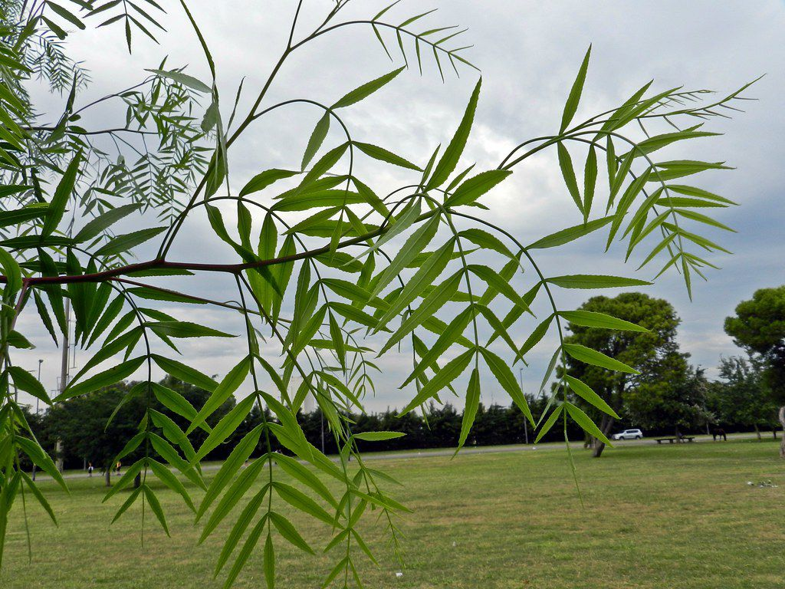
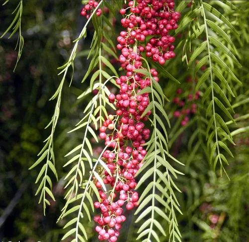
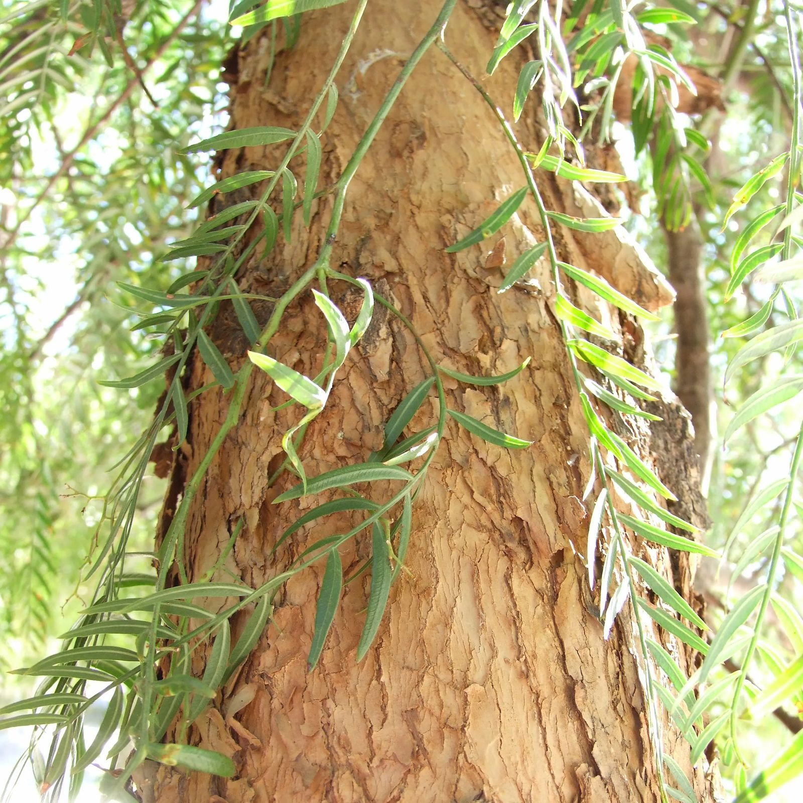

- Familia: Anacardiaceae (familia de los anacardos).
- Tronco: es recto y puede alcanzar un diámetro de hasta 1 metro en árboles maduros. Es robusto y leñoso, proporcionando una estructura sólida para el árbol.
- Corteza: es de color gris a marrón claro y tiene una textura rugosa y escamosa. A medida que el árbol envejece, la corteza puede presentar grietas y placas.
- Copa: es amplia y extendida, con una forma redondeada o piramidal. Las ramas son flexibles y se extienden en varias direcciones, creando una sombra densa y una estructura decorativa.
- Hoja: son compuestas, pinnadas, con foliolos finos y lanceolados dispuestos en pares a lo largo del raquis central. Son de color verde brillante y tienen una textura algo coriácea. Las hojas pueden alcanzar hasta 20 cm de largo y 10 cm de ancho.
- Flor: son pequeñas, de color blanco a rosado, y se agrupan en racimos o panículas. Las inflorescencias aparecen en primavera y verano, y tienen un aroma suave y agradable.
- Fruto: es una drupa pequeña, redonda y de color rojo a rosado cuando está maduro. Los frutos son aromáticos y tienen un sabor ligeramente picante, similar al de la pimienta. Se utilizan como especia en la cocina.
- Usos: se cultiva principalmente por sus frutos aromáticos, que se utilizan como especia en la cocina y en la elaboración de mezclas de pimienta. También es valorado en jardinería ornamental debido a su atractivo follaje y su sombra. La madera del árbol se utiliza en algunas regiones para la fabricación de muebles y artesanías. En algunos casos, se planta como árbol de sombra en áreas urbanas y parques.
- Floración: ocurre en primavera y verano, cuando el árbol produce racimos de flores pequeñas y fragantes. La floración puede durar varias semanas.
- Fructificacion: sigue a la floración, con la formación de frutos que maduran en verano y otoño. Los frutos se recogen cuando están completamente maduros y se utilizan como especia.
- Reproducción: se reproduce tanto por semillas como por esquejes. Las semillas se cosechan de los frutos maduros y se siembran en condiciones adecuadas para germinar. Los esquejes también se pueden tomar de ramas saludables y se plantan para desarrollar nuevas plantas.

Hoja

Fruto

Corteza